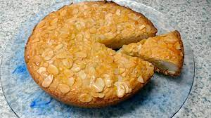

Boterkoek

Description
Delicious, authentic Dutch butter cake. This cake is moist with a great almond flavor - a favorite in most Dutch households!
Ingredients
- 1 cup butter, softened
- 1 ½ cups white sugar
- 2 eggs, beaten
- 1 tablespoon almond extract
- 2 ½ cups all-purpose flour
- 2 teaspoons baking powder
- 16 almond halves (Optional)
Steps
- Preheat the oven to 350 degrees F (175 degrees C). Grease two 8 inch round cake pans, or 9 inch pie plates.
- In a large bowl, use an electric mixer to beat butter and sugar until light and fluffy. Add eggs, reserving just enough to brush over the tops, about 1 tablespoon. Stir in the almond extract. Combine the flour and baking powder; stir into the batter by hand using a sturdy spoon. The dough will be stiff.
- Press evenly into the two prepared pans. Press almond halves into the top where each slice would be. Brush the tops with a thin layer of the reserved egg.
- Bake in the preheated oven for about 30 minutes, or until the top is golden brown. Cut into wedges to serve.